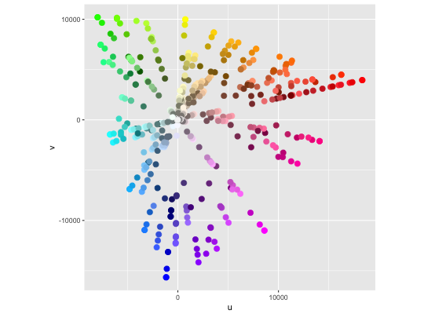
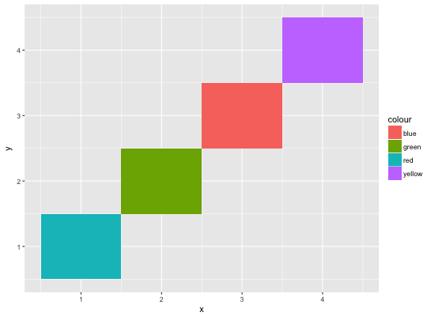
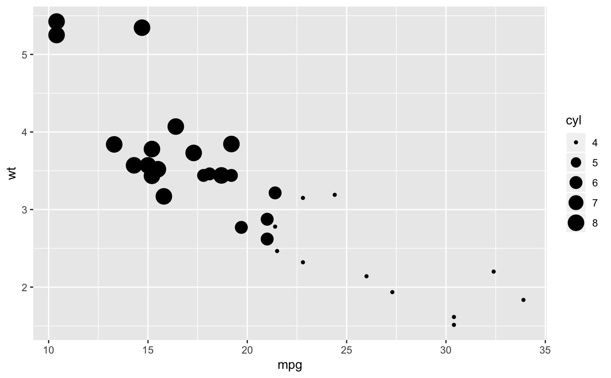
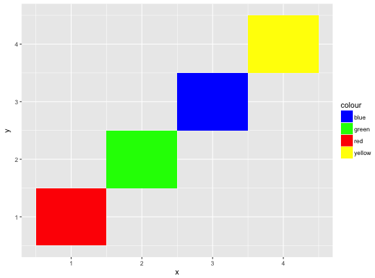
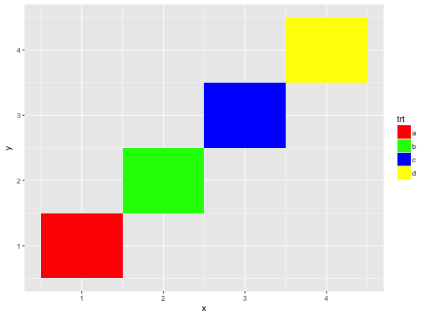
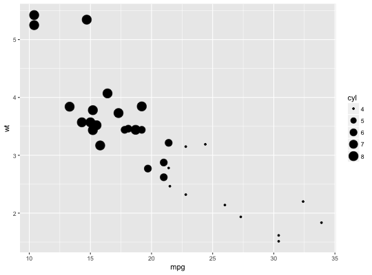
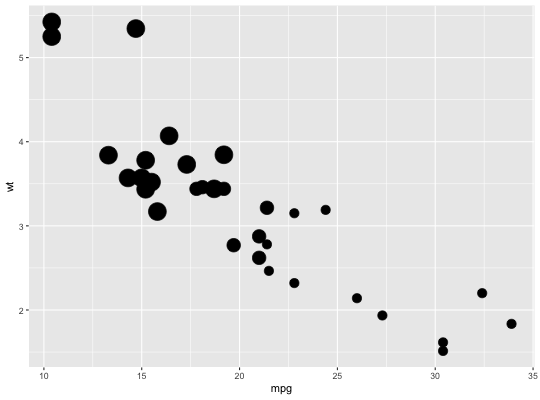

Use this set of scales when your data has already been scaled, i.e. it
already represents aesthetic values that ggplot2 can handle directly
This will not produce a legend unless you also supply the breaks
and labels.
scale_colour_identity(..., guide = "none") scale_fill_identity(..., guide = "none") scale_shape_identity(..., guide = "none") scale_linetype_identity(..., guide = "none") scale_alpha_identity(..., guide = "none") scale_size_identity(..., guide = "none")
Other arguments passed on to discrete_scale or
continuous_scale
Guide to use for this scale - defaults to "none".
ggplot(luv_colours, aes(u, v)) + geom_point(aes(colour = col), size = 3) + scale_color_identity() + coord_equal()df <- data.frame( x = 1:4, y = 1:4, colour = c("red", "green", "blue", "yellow") ) ggplot(df, aes(x, y)) + geom_tile(aes(fill = colour))# To get a legend guide, specify guide = "legend" ggplot(df, aes(x, y)) + geom_tile(aes(fill = colour)) + scale_fill_identity(guide = "legend")# But you'll typically also need to supply breaks and labels: ggplot(df, aes(x, y)) + geom_tile(aes(fill = colour)) + scale_fill_identity("trt", labels = letters[1:4], breaks = df$colour, guide = "legend")# cyl used as point size ggplot(mtcars, aes(mpg, wt)) + geom_point(aes(size = cyl)) + scale_size_identity()